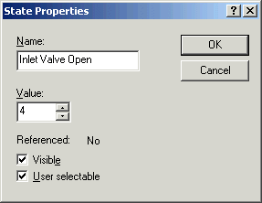
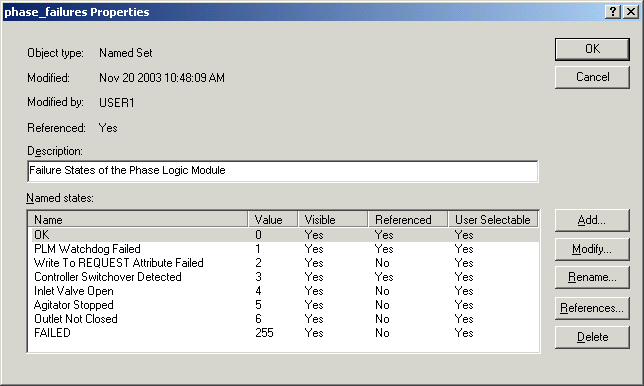

Modify the phase_failures set
- In the DeltaV Explorer, select Named Sets under System Configuration/Setup.
- Double-click the phase_failures set to open the Properties dialog.
- Click Add.
-
In the State Properties dialog, type the name of the new failure state, Inlet Valve Open, and accept the assigned value of 4. Make sure that the Visible and User selectable check boxes are selected.

-
Add the failure states Agitator Stopped and Outlet Not Closed.
The phase_failures set should now look like the following:

- Click OK to save the named set.